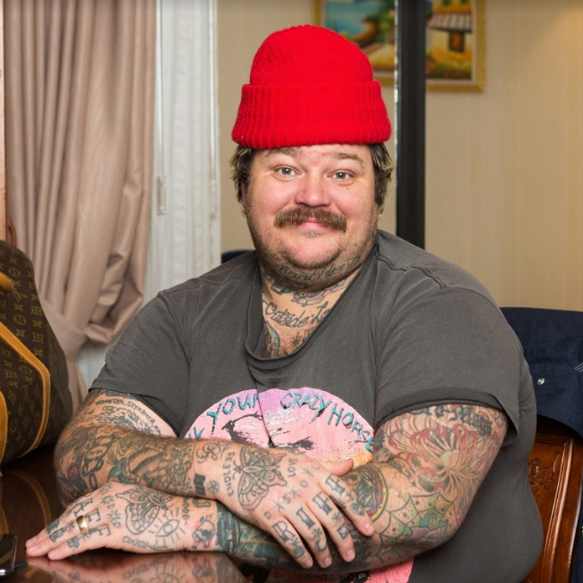

About
This recipe comes from Canadian celebrity chef and internet personality Matty Matheson. It orignally aired on his Vice special "Munchies", and has now made it all the way to your table to share with you and your buds. As he says in the episode "Fried chicken is the universal way to show love."
Ingredients
- 2 chickens, broken down into 10 pieces each breasts are cut into 2 pieces, backbone discarded
- 5 cups strained pickle juice
- 4 cups buttermilk
- 16 cups canola oil
- 6 cups plain all-purpose flour
- 4 tbsp cayenne
- 1 tbsp ground cloves
- 1 tbsp ground coriander
- 1 tbsp ground mace
- 1 tbsp poultry seasoning
- 1 tbsp smoked paprika
- 1 tbsp sweet paprika
- 1 tbsp whole fennel seed
- 4 tbsp kosher salt
- 1 tbsp freshly ground black pepper
How to Cook
- In a large bucket or pot, submerge the chicken pieces in the pickle juice. Refrigerate for 24 hours (or up to 3 days).
- Remove the chicken pieces from the pickle brine and submerge it in the buttermilk. Refrigerate for another 4 hours or up to 24 hours.
- In a large bowl, combine the flour with the spices. Generously season chicken all over with salt and pepper. Toss chicken pieces throuroughly in flour, shaking off excess. Place on a rack on a track, ready to fry.
- Heat 10 cm (4 inches) of oil in a deep fryer or large, deep heavy-duty saucepan (Make sure to use a heavy duty cast iron pot no more than half full, "because it'll fuckin boil over and smash your skin") over medium heat until a deep-fry thermometer reads 300-325°F / 150-160°C.
- Working in batches, fry the chicken, turning occasionally, until it is cooked through and brown, 15 minutes for white meat, 20 minutes for dark meat. Drain on a cooling rack fitted over a baking sheet, sprinkle with salt, and let cool for 5 minutes before serving. Serve with hot sauce, lemon wedges, and the bread.